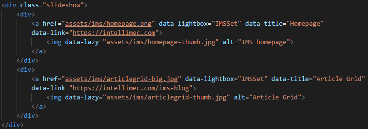

...in 3 (relatively) simple steps
Basic structure is section > wrapper > Bootstrap columns.
The site is made up of HTML5 sections, one for each of the coloured horizontal blocks. The sections are the main content groups and have their colours set according to CSS. The z-index is 2 because so they stand out above the hero section, which is -1.
Inside the sections, there are wrapper divs. The wrapper divs constrain the content of the sections, by setting a max-width. This way the content is easily readable and doesn't look too sparse on large screens.
Finally, inside the wrapper divs, there are Bootstrap responsive columns. This allows the actual content to reflow and be responsive on a wide variety of screen sizes, from small phones and mobile devices, to large desktop computer displays.
An example from my site:
Using the slick jQuery plugin
The slick plugin is fairly simple, just include jQuery at the bottom of your body tag and then make a div for the slideshow, with a div inside for each slide. Give your slideshow div a class, and initialize the slick plugin on your page load.
When it is done, it will look something like this:
For reference, mine looks more like this:
Using the Lightbox jQuery plugin
The Lightbox plugin is also fairly simple. Include the plugin and CSS, and set up your HTML content. This one runs on page load automatically.
You have a link surrounding an image. The link href goes to the large version of the image to show on click, and the small one is the thumbnail to click on. It can just be text, or anything, really. I have combined the slick and Lightbox plugins in my sliders.
For reference, mine looks like this:
There are a few attributes to set.
There's more, but those are the main areas to focus on. You can check out all the code on my GitHub